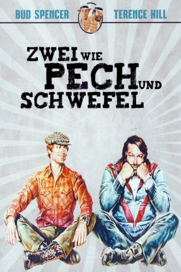

#4406 Zwei wie Pech und Schwefel
Alternativ: Watch Out, We're Mad (Englischer Titel)
 
 IMDB-Wertung: 7.5 / 10
IMDB-Wertung: 7.5 / 10  Metascore: 0
Metascore: 0 
Ben (Bud Spencer) und Kid (Terence Hill) – zwei begeisterte Hobbyrennfahrer – gehen bei einem Cross-Rennen gleichzeitig als Erste ins Ziel und müssen sich den Gewinn in Form eines Strandbuggys teilen. In einem benachbarten Freizeitpark soll deshalb ein Wettessen mit Bier und Würstchen den wahren Sieger ermitteln. Als eine Ganovenbande auftaucht und im Auftrag eines Grundstückspekulanten (John Sharp) versucht, die Bewohner des Stadtviertels zu verschrecken, bilden die einstigen Rivalen sofort ein schlagkräftiges Team. Gemeinsam haben sie nicht nur vier wirksame Argumente gegen das skrupellose Vorgehen der Verbrecher, sondern schließlich auch einen Grund zur gegenseitigen Wiedergutmachung. Im Zuge ihrer Zerstörungsorgie erwischen die Ganoven nämlich auch das neue Gefährt der beiden passionierten Fahrer und sehen sich nun deren Zorn ausgesetzt. Die Gangster lassen ab jetzt nichts mehr unversucht, um Ben und Kid unter die Erde zu bringen, doch die beiden wissen sich zu wehren.
Jahr: 1974
Dauer: 101 Minuten
FSK: 12
Land: Studio: RCA/Columbia Pictures International VideoTonspuren: DTS - ,
Untertitel:
Auflösung: 1080p (1920x1080) Größe: 8960 MB
Genre: Action, Komödie
Regisseur: Marcello Fondato
Drehbuch: Ken Friedman
Soundtrack:
Darsteller:
 Terence Hill als Kid
Terence Hill als Kid Bud Spencer als Ben
Bud Spencer als Ben Donald Pleasence als The Doctor
Donald Pleasence als The Doctor Pietro Torrisi als Gymnast , uncredited
Pietro Torrisi als Gymnast , uncredited- Patty Shepard als Liza
- Deogratias Huerta als Attila
 John Sharp als The Boss
John Sharp als The Boss- Manuel de Blas als Paganini
- Luis Barbero als Jeremias
- Emilio Laguna als Conductor
- Rafael Albaicín als
- Giancarlo Bastianoni als Gymnast
- Roberto Alessandri als
- Ada Pometti als
- José Yepes als
- Inés Morales als
- José Luis Lizalde als
 Omero Capanna als Thug at Party , uncredited
Omero Capanna als Thug at Party , uncredited- Giovanni Cianfriglia als Boxer in Gymnasium , uncredited
- Rémy Julienne als Thug in Motorbike , uncredited
- Rocco Lerro als Gymnast , uncredited
- Manuel Mateos als (uncredited
- Franco Moruzzi als Gymnast , uncredited
- José Panizo als Bingo , uncredited
- Osiride Pevarello als Gymnast , uncredited
- José Santa Cruz als Lefty , uncredited
- Franco Ukmar als Gymnast , uncredited
- Marcello Verziera als Boxer in Gymnasium , uncredited
Datei: X:\Person\Bud Spencer + Terence Hill\Zwei wie Pech und Schwefel (1974, FSK12, 1920x1080).mkv seit 13.09.2016
Festplatte: HD Collection-7+mehr(A-Z)+Person
 Es gibt insgesamt 43 Filme in der Gruppe 'Person\Bud Spencer + Terence Hill'
Es gibt insgesamt 43 Filme in der Gruppe 'Person\Bud Spencer + Terence Hill'